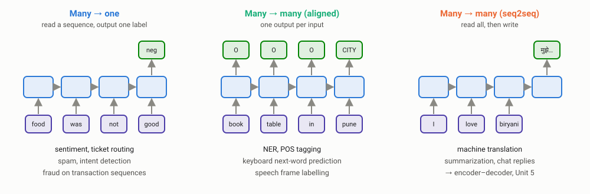
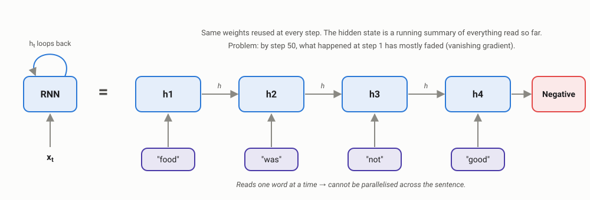
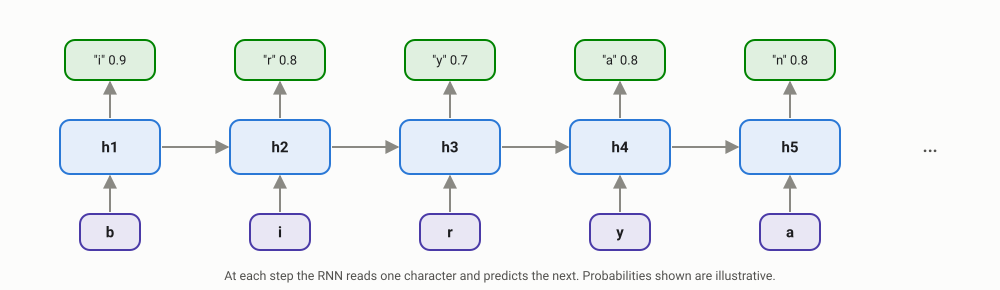
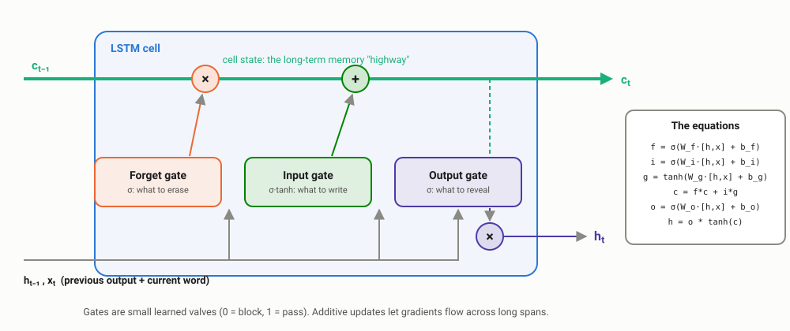
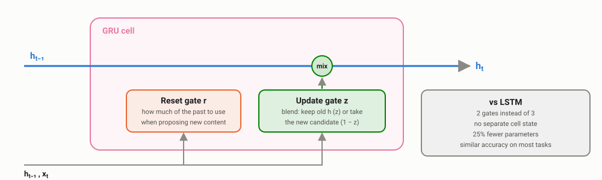
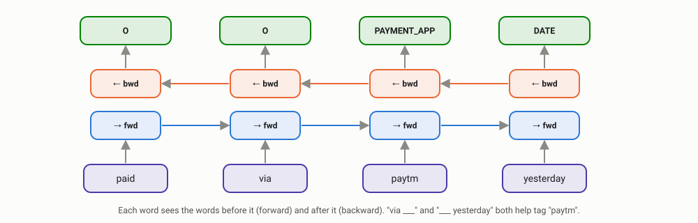
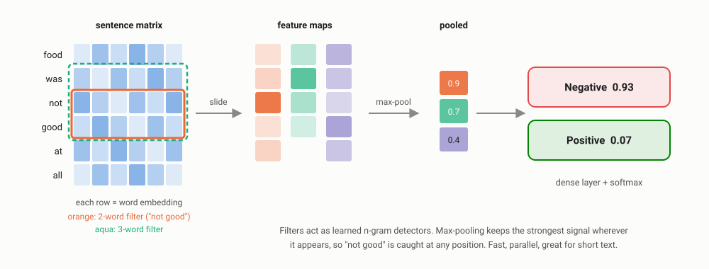

Recurrent Neural Networks
Models that read text in order and remember what came before: how they work, why they forget, how LSTMs and GRUs fixed it, and where they still run in production today.
Every code block on this page needs these libraries. In Google Colab, run this in the first cell:
!pip install torch pandas scikit-learnOn your own computer, run the same commands in a terminal without the leading !. Google Colab already has PyTorch installed, so this is mainly for your own laptop. Data: dishes.txt and support_tickets.csv.
00Why order matters
Everything so far ignored word order. Bag of words shuffles words into a bag (Unit 2), and averaging word embeddings does the same thing with vectors (Unit 3). N-grams keep a little order, but only inside a fixed window of 2–3 words.
Real language has long-range dependencies:
"The biryani that I ordered from the new place near my office on Friday was ___."
To predict the blank (cold? amazing?), and to know the complaint is about biryani and not the office, a model must connect words 12 positions apart. A trigram model sees only "Friday was ___".
A recurrent neural network (RNN) reads text one token at a time and carries a memory, the hidden state, from each step to the next. The same network handles several kinds of sequence tasks:

01What is an RNN?
An RNN reads a sentence one word at a time and keeps a short running summary of everything it has read so far. That summary is called the hidden state, or simply the model's memory.
Think of how you read a WhatsApp message. You don't look at all the words at once. You read word by word, and after each word your understanding updates: "okay, it's about food… it was not… good, so this is a complaint." An RNN does exactly that.
Watch the memory update, word by word
| Step | Reads | Memory after this word (in plain English) |
|---|---|---|
| 1 | "food" | The topic is food. |
| 2 | "was" | Food… something is being described. |
| 3 | "not" | Food, and a negation is coming. Be careful! |
| 4 | "good" | Food + "not good" = a complaint. Negative. |
In the real model, the "memory" is not English sentences but a list of numbers (for example 64 of them). The idea is the same: new memory = mix of (old memory + current word), repeated for every word.

The diagram shows the same RNN twice. On the left, it is one box with a loop: its output feeds back into itself. On the right, the loop is "unrolled" so you can see it working through each word. It is the same box every time, passing its memory along like a baton in a relay race.
Three things to remember
- One word at a time, in order. Unlike bag of words, word order now matters.
- Memory carries forward. By the last word, the memory is a summary of the whole sentence. That final memory is what we use to decide "negative" or "refund ticket".
- The same weights at every step. So an RNN can read a 5-word or a 500-word ticket with the same model size. An n-gram model, by contrast, needs a bigger table for every extra word of context.
For those who like the formula, this is the whole idea in one line:
new memory = tanh( W_x · current word + W_h · old memory + b )
hₜ xₜ hₜ₋₁
W_x and W_h are learned weight matrices; tanh just squeezes the numbers into the range −1 to 1 so they don't grow out of control.
In code (PyTorch)
import torch, torch.nn as nn
rnn = nn.RNN(input_size=50, hidden_size=64, batch_first=True) # e.g. 50-d GloVe vectors in
x = torch.randn(8, 12, 50) # batch of 8 tickets, 12 words each, 50 numbers per word
outputs, h_last = rnn(x)
print("outputs:", tuple(outputs.shape)) # one hidden state per word
print("h_last :", tuple(h_last.shape)) # final summary of each ticket
print("weights:", {n: tuple(p.shape) for n, p in rnn.named_parameters()})outputs: (8, 12, 64)
h_last : (1, 8, 64)
weights: {'weight_ih_l0': (64, 50), 'weight_hh_l0': (64, 64), 'bias_ih_l0': (64,), 'bias_hh_l0': (64,)}
outputshas a hidden state for every word: use it for tagging tasks (NER).h_lastis the final memory: use it for classification (sentiment, ticket routing).weight_hh(64 × 64) is the "memory" matrix applied at every step. Keep an eye on it: it is the reason for the vanishing gradient problem in section 03.
02RNN language models
In Unit 2 a bigram model predicted the next word from only the previous word. An RNN language model predicts the next token from its hidden state, which (in principle) summarises the entire history.

| N-gram LM (Unit 2) | RNN LM | |
|---|---|---|
| Context used | Fixed: last n − 1 words | Whole history, compressed into h |
| Unseen combinations | Needs smoothing | Generalises via embeddings |
| Model size vs context | Grows exponentially with n | Constant |
| Speed | A table lookup | Matrix multiplications at every step |
Language models are compared with perplexity: roughly, "how many choices is the model confused between at each step". Lower is better. A perplexity of 50 means the model is, on average, as uncertain as picking uniformly from 50 words.
Hands-on: an LSTM that invents new dishes
We train a small character-level LSTM (the improved RNN from section 04) on 195 real Indian dish names, then ask it to write new ones.
📄 dishes.txt (the 195 dish names, one per line) · 🐍 char_lstm.py (the full script below)
In Google Colab, click the folder icon on the left, upload dishes.txt, then run the code. It trains in about 10 seconds on a CPU.
import torch, torch.nn as nn, random
torch.manual_seed(0); random.seed(0)
names = open("dishes.txt").read().split("\n")[:-1] # ~200 real Indian dish names
chars = sorted(set("".join(names))) + ["<end>"]
idx = {c: i for i, c in enumerate(chars)}
class CharLSTM(nn.Module):
def __init__(self, vocab, emb=32, hidden=128):
super().__init__()
self.emb = nn.Embedding(vocab, emb)
self.lstm = nn.LSTM(emb, hidden, num_layers=2, batch_first=True, dropout=0.2)
self.out = nn.Linear(hidden, vocab)
def forward(self, x, state=None):
h, state = self.lstm(self.emb(x), state)
return self.out(h), state
model = CharLSTM(len(chars))
opt = torch.optim.Adam(model.parameters(), lr=3e-3)
def encode(name):
return [idx[c] for c in name] + [idx["<end>"]]
for step in range(2000): # ~10 seconds on a laptop CPU
seq = torch.tensor([encode(random.choice(names))])
logits, _ = model(seq[:, :-1]) # predict each next character
loss = nn.functional.cross_entropy(logits[0], seq[0, 1:])
opt.zero_grad(); loss.backward(); opt.step()
@torch.no_grad()
def generate(start, temperature=0.8, max_len=30):
x, state, out = torch.tensor([[idx[c] for c in start]]), None, start
logits, state = model(x, state)
for _ in range(max_len):
probs = torch.softmax(logits[0, -1] / temperature, dim=0)
c = torch.multinomial(probs, 1).item()
if chars[c] == "<end>":
break
out += chars[c]
logits, state = model(torch.tensor([[c]]), state)
return out
torch.manual_seed(42)
for start in ["p", "ch", "m", "tandoori ", "kashmiri ", "mango ", "schezwan ", "butter "]:
dish = generate(start, temperature=1.0)
print(f"{start!r:<12} -> {dish:<28} {'(in training data)' if dish in names else 'NEW'}")'p' -> putturan paneer NEW 'ch' -> chicken stew (in training data) 'm' -> malai chilli parotta NEW 'tandoori ' -> tandoori roti (in training data) 'kashmiri ' -> kashmiri momos NEW 'mango ' -> mango dosa NEW 'schezwan ' -> schezwan noodlry NEW 'butter ' -> butter chicken momos NEW
After 10 seconds of training on 195 names, the model has learned spelling, word boundaries and plausible dish structure. "Kashmiri momos" and "butter chicken momos" are exactly the kind of fusion dishes real menus carry. "noodlry" shows its limits: with this little data it still makes spelling mistakes.
This is the same generate-one-token-at-a-time loop as the bigram generator in Unit 2 and as ChatGPT. Before Transformers, LSTM language models powered smartphone keyboards: Google published in 2018 how Gboard's next-word prediction used a small LSTM variant trained with federated learning, so the model learned from typing on users' phones without the text leaving the device. RNN LMs were also used to re-rank candidate sentences in speech recognition and machine translation.
03Vanishing and exploding gradients
When an RNN learns, its "correction signal" travels backwards through every word, and gets multiplied at every step. Multiply by a small number again and again and the signal vanishes; by a big number and it explodes.
First, how does an RNN learn?
- It reads the whole ticket, word by word, and makes a guess ("delivery complaint").
- We compare the guess with the right answer ("food complaint") and measure how wrong it was.
- A correction signal (the gradient) is sent backwards, from the last word to the first, telling each step how to adjust. This is backpropagation from Unit 3, applied through time.
The problem: Chinese whispers
Remember the game where a message is whispered along a line of 50 people? By the end, the message is lost. The correction signal has the same problem. At every word it passes back through, it gets multiplied by some number. Look at what repeated multiplication does:
| Words back | Multiply by 0.5 each step | Multiply by 1.5 each step |
|---|---|---|
| 1 | 0.5 | 1.5 |
| 5 | 0.03 | 7.6 |
| 10 | 0.001 | 58 |
| 20 | 0.000001 | 3,325 |
| 50 | 0.0000000000000009 | 637,621,500 |
Vanishing gradient (left column)
The signal shrinks to almost zero. Early words get no correction, so the model never learns to use them. In practice: it forgets that the complaint was about the biryani mentioned 12 words ago.
Exploding gradient (right column)
The signal blows up to huge numbers. Weights jump wildly and training crashes, usually showing a loss of NaN ("not a number").
Vanishing is the more common and more serious problem for RNNs, and it is the reason LSTMs and GRUs were invented (next section). Exploding has a simple fix, gradient clipping, covered below.
Seeing it for real
We don't have to take this on faith. The code below feeds 50 random inputs through untrained models and measures how strongly each earlier word still influences learning:
import torch, torch.nn as nn
torch.manual_seed(0)
T, D, H = 50, 16, 64 # 50 time steps, 16-dim inputs, 64 hidden units
def lstm_forget_bias(b):
m = nn.LSTM(D, H)
for name, p in m.named_parameters(): # PyTorch gate order: input, forget, cell, output
if "bias" in name:
p.data[H:2*H] = b / 2 # two bias vectors are added, so split b between them
return m
def gradient_per_step(cell):
x = torch.randn(T, 1, D, requires_grad=True) # one sequence
out, _ = cell(x)
out[-1].sum().backward() # loss depends only on the LAST output
return x.grad.norm(dim=(1, 2)) # how much each input step influenced it
models = {"RNN": lambda: nn.RNN(D, H), "GRU": lambda: nn.GRU(D, H),
"LSTM": lambda: nn.LSTM(D, H), "LSTM (forget bias 3)": lambda: lstm_forget_bias(3.0)}
for name, make in models.items():
g = torch.stack([gradient_per_step(make()) for _ in range(20)]).mean(0) # average of 20 random models
g = (g / g[-1]).tolist() # relative to the most recent word
print(f"{name:<21} 10 steps back: {g[39]:.1e} 25 back: {g[24]:.1e} 49 back: {g[0]:.1e}")RNN 10 steps back: 1.4e-03 25 back: 1.3e-07 49 back: 2.4e-13 GRU 10 steps back: 5.4e-03 25 back: 4.7e-06 49 back: 9.6e-11 LSTM 10 steps back: 5.3e-03 25 back: 4.6e-06 49 back: 8.6e-11 LSTM (forget bias 3) 10 steps back: 4.3e-01 25 back: 4.4e-01 49 back: 1.1e+00

How to read the chart: the further a line drops, the more the model forgets. The x-axis is how many words back; the y-axis is how much influence that word still has (1 = full, 10−12 = practically none).
- Plain RNN: a word 49 steps back has 10−13 of the influence of the latest word. For learning purposes, it does not exist.
- LSTM and GRU with default settings are only slightly better at initialisation. Their gates start half-open, so memory still leaks away.
- LSTM with its forget gate biased open keeps the gradient near 1 across all 50 steps. This is the whole point of the LSTM design, and why practitioners initialise the forget-gate bias to a positive value (Jozefowicz et al., 2015 recommended 1).
The opposite problem shows up in production training jobs as a loss that suddenly jumps to NaN. The standard fix is gradient clipping: if the correction signal gets bigger than a set limit, shrink it back to that limit, like a speed limiter on a car. It is one line, torch.nn.utils.clip_grad_norm_(model.parameters(), 1.0), and it is still used when training Transformers and LLMs today.
04LSTM: long short-term memory
An LSTM is an RNN with a separate notebook for long-term memory, plus three gates that decide what to erase, what to write and what to read out.
Think of a student taking notes in a long lecture. They don't rewrite the whole notebook after every sentence. They:
- cross out notes that are no longer relevant (the forget gate),
- write down only the important new points (the input gate),
- and when asked a question, read out only the relevant part of their notes (the output gate).
A plain RNN has no notebook: it squeezes everything into one small memory and rewrites it completely at every word. That is why it forgets.
Watch the gates work on a real review
"The biryani was cold but the raita was amazing"
| Word | Forget gate (erase?) | Input gate (write?) | Notebook now says |
|---|---|---|---|
| "biryani" | nothing to erase | write: dish = biryani | biryani |
| "cold" | keep | write: biryani is bad | biryani → negative |
| "but" | keep, but get ready | write: a contrast is coming | biryani → negative, contrast ahead |
| "raita" | keep the biryani note | write: second dish = raita | biryani → negative; raita → ? |
| "amazing" | keep | write: raita is good | biryani → negative; raita → positive |
At the end, the output gate reads out whatever the task needs: "mixed review" for sentiment, or "complaint about biryani" for the kitchen team. (The notes are written in plain English here; in the real model they are numbers, and the gates learn this behaviour from data.)
Why this fixes the vanishing gradient
In a plain RNN, the correction signal is multiplied by a small number at every step, so it disappears (section 03). In an LSTM, the notebook is updated by adding new notes to the old ones. When the forget gate is almost fully open (close to 1), the signal passes back through the notebook almost unchanged:
| After 50 words | Signal left |
|---|---|
| Plain RNN (multiply by ~0.5 each step) | 0.0000000000000009 |
| LSTM with forget gate open (multiply by ~0.99 each step) | 0.6, still strong |
That is exactly the purple line in the measured chart above: the LSTM with its forget gate open keeps the signal alive across all 50 steps.

| Gate | Question it answers | In a support ticket |
|---|---|---|
| Forget gate f | What should I erase from memory? | After "…but the raita", forget that we were discussing the biryani |
| Input gate i | What new information should I store? | Store "refund" when it appears; ignore "please", "the" |
| Output gate o | What part of memory is relevant right now? | Reveal "negative sentiment" when the classifier asks at the end |
For those who like the formula, the key line in the diagram is c = f * c + i * g: new notebook = (forget gate × old notebook) + (input gate × new notes). Each gate is just a number between 0 (closed) and 1 (open), learned from data. The LSTM was introduced by Hochreiter & Schmidhuber in 1997.
05GRU: the lighter alternative
A GRU is a simpler LSTM: no separate notebook, and two gates instead of three. It remembers almost as well, with fewer parameters.
Back to our student. Instead of keeping a separate notebook, a GRU student has one page of notes and asks just two questions at every word:
Update gate: "How much should I change?"
Keep most of the old notes (the word was "the") or replace them with new ones (the word was "refund"). One dial does both jobs that the LSTM's forget and input gates do separately.
Reset gate: "Should I look at my old notes?"
When writing a new note, decide whether the old notes matter. After "…but", the old context may be less useful for the new thought.
| LSTM | GRU | |
|---|---|---|
| Memory | Separate notebook (cell state) + working memory | One memory |
| Gates | 3: forget, input, output | 2: update, reset |
| Size | Bigger | About 25% smaller |
| Training speed | Slower | Faster |
| Accuracy | Usually very similar. Teams try both and keep the one that wins on their data. | |

The GRU was introduced by Cho et al. in 2014, during work on machine translation (Unit 5). Here are the real sizes of the three models for the same input and memory size:
import torch.nn as nn
for name, cls in [("RNN", nn.RNN), ("GRU", nn.GRU), ("LSTM", nn.LSTM)]:
m = cls(input_size=100, hidden_size=128)
print(f"{name:<5} parameters = {sum(p.numel() for p in m.parameters()):,}")RNN parameters = 29,440 GRU parameters = 88,320 LSTM parameters = 117,760
Summary: all three side by side
| Vanilla RNN | GRU | LSTM | |
|---|---|---|---|
| Gates | 0 | 2 (update, reset) | 3 (forget, input, output) |
| Parameters (100 → 128) | 29,440 | 88,320 | 117,760 |
| Long-range memory | Poor | Good | Good |
| When teams chose it | Almost never in production | Smaller models, on-device, faster training | The safe default for most tasks, 2014–2018 |
06Experiment: can it remember?
A clean test of memory: show the model a sequence of random digits and ask it, at the very end, for the first digit. Everything in between is noise. We train each model for 3,000 steps and test on 2,000 new sequences (10% = random guessing):
import torch, torch.nn as nn
torch.manual_seed(0)
def batch(n, T):
"""Sequences of random digits 0-9. The label is the FIRST digit, seen T steps ago."""
x = torch.randint(0, 10, (n, T))
return x, x[:, 0]
def lstm_forget_bias(b):
def make(inp, hid, batch_first=True):
m = nn.LSTM(inp, hid, batch_first=batch_first)
for name, p in m.named_parameters(): # gate order: input, forget, cell, output
if "bias" in name:
p.data[hid:2*hid] = b / 2
return m
return make
class Model(nn.Module):
def __init__(self, cell):
super().__init__()
self.emb = nn.Embedding(10, 16)
self.rnn = cell(16, 64, batch_first=True)
self.out = nn.Linear(64, 10)
def forward(self, x):
h, _ = self.rnn(self.emb(x))
return self.out(h[:, -1]) # predict from the final hidden state only
def train_and_test(cell, T, steps=3000):
m = Model(cell); opt = torch.optim.Adam(m.parameters(), lr=3e-3)
for _ in range(steps):
x, y = batch(64, T)
loss = nn.functional.cross_entropy(m(x), y)
opt.zero_grad(); loss.backward()
nn.utils.clip_grad_norm_(m.parameters(), 1.0) # gradient clipping: standard practice
opt.step()
x, y = batch(2000, T)
return (m(x).argmax(1) == y).float().mean().item()
cells = {"RNN": nn.RNN, "GRU": nn.GRU, "LSTM": nn.LSTM, "LSTM+bias": lstm_forget_bias(3.0)}
for T in [5, 20, 50]:
scores = " ".join(f"{name} {train_and_test(c, T):>4.0%}" for name, c in cells.items())
print(f"first digit, {T:>2} steps back: {scores}")first digit, 5 steps back: RNN 100% GRU 100% LSTM 100% LSTM+bias 100% first digit, 20 steps back: RNN 77% GRU 100% LSTM 10% LSTM+bias 100% first digit, 50 steps back: RNN 11% GRU 9% LSTM 9% LSTM+bias 100%
- 5 steps: every model succeeds. Short memory is easy.
- 50 steps: only the LSTM with its forget gate initialised open learns the task. Everything else is stuck at random guessing, exactly as the gradient measurement predicted.
- The default LSTM failed at 20 steps in this run while the GRU succeeded. In an earlier, shorter run (1,500 training steps) the GRU failed the same test and the plain RNN passed it. Training recurrent models is sensitive to initialisation, training length and randomness.
That last point is a real engineering lesson: always run important experiments with several random seeds before concluding that model A beats model B. Teams that compare single runs regularly ship the wrong model. And small initialisation choices (like the forget-gate bias) can matter more than switching architectures.
07Bidirectional and stacked RNNs
A normal RNN only sees the past. For tagging tasks, the future matters too: in "paid via paytm yesterday", both "via" before and "yesterday" after help identify Paytm as a payment app. A bidirectional RNN runs one RNN left-to-right and another right-to-left, and combines both at every word.

- Stacked (deep) RNNs put several RNN layers on top of each other; lower layers capture spelling and syntax, higher layers more meaning.
nn.LSTM(..., num_layers=2)in the dish generator is a 2-layer stack. - BiLSTM-CRF (a bidirectional LSTM with a CRF layer that enforces valid tag sequences) was the industry standard for named-entity recognition from roughly 2015 until BERT arrived in 2018.
- Bidirectional models need the whole sentence first, so they cannot be used for live next-word prediction or streaming speech.
08CNNs for text: the fast alternative
Convolutional neural networks, famous from computer vision, also work on text. A 1D convolution slides a small filter over the sequence of word vectors; each filter learns to detect a useful n-gram pattern such as "not good" or "refund pending", wherever it appears.

class TicketCNN(nn.Module):
def __init__(self):
super().__init__()
self.emb = nn.Embedding(len(vocab) + 1, 32, padding_idx=0)
self.convs = nn.ModuleList([nn.Conv1d(32, 32, k, padding=k // 2) for k in (2, 3)]) # 2- and 3-word filters
self.out = nn.Linear(64, len(labels))
def forward(self, x):
e = self.emb(x).transpose(1, 2) # (batch, channels, time)
pooled = [torch.relu(c(e)).max(dim=2).values for c in self.convs] # max-pool over time
return self.out(torch.cat(pooled, dim=1))Unlike an RNN, all positions are computed in parallel, so CNNs are fast to train and to serve. Their weakness is the mirror image: each filter only sees a few words at once, so long-range dependencies need many stacked layers.
09Case study: do we need deep learning for the ticket router?
Same 120 tickets and the same train/test split as Unit 2. We trained a bidirectional LSTM and the CNN above, each with its own embeddings learned from scratch (full scripts: lstm_tickets.py, cnn_tickets.py):
class TicketLSTM(nn.Module):
def __init__(self):
super().__init__()
self.emb = nn.Embedding(len(vocab) + 1, 32, padding_idx=0)
self.lstm = nn.LSTM(32, 64, batch_first=True, bidirectional=True)
self.out = nn.Linear(128, len(labels))
def forward(self, x):
h, _ = self.lstm(self.emb(x))
return self.out(h.max(dim=1).values) # max-pool over timeCNN accuracy = 0.70 latency = 0.21 ms/ticket parameters = 13,860 BiLSTM accuracy = 0.73 latency = 0.27 ms/ticket parameters = 59,108
| Model | Test accuracy | Explainable? | Notes |
|---|---|---|---|
| TF-IDF + logistic regression (Unit 2) | 0.80 | Yes | Trains in under a second |
| BiLSTM | 0.73 | Hard | 59,108 parameters learned from 90 tickets |
| 1D CNN | 0.70 | Hard | Fastest neural option |
With 90 training tickets, the neural models lose to the TF-IDF baseline. They have tens of thousands of parameters to learn and almost no data to learn them from. This is the most common mistake students bring into their first job: reaching for the most advanced model first. Neural sequence models start to win with tens of thousands of labelled examples, or when they start from pre-trained knowledge (pre-trained embeddings from Unit 3, or pre-trained Transformers from Unit 5).
10RNNs in industry
From about 2014 to 2018, LSTMs and GRUs were the state of the art for almost every language task, and many are still running.
Machine translation
Google Translate's 2016 switch to neural translation (GNMT) used deep stacked LSTMs in an encoder–decoder: the subject of Unit 5.
Keyboards
Next-word prediction on phones with small LSTMs, trained with federated learning so typing stays on the device.
On-device speech
Streaming speech recognition models built on RNNs, which process audio as it arrives with constant memory.
Forecasting
Demand and traffic forecasting; Amazon's DeepAR (2017) is an autoregressive RNN for probabilistic forecasts.
Sequences of events
Transaction sequences for fraud detection, clickstreams for recommendations, logs for anomaly detection.
NER & tagging
BiLSTM-CRF taggers for entity extraction in documents, before Transformers took over.
RNNs have one property Transformers lack: generating each new token costs the same small amount of compute and memory, however long the text already is. That matters for very long inputs, streaming and small devices. Since 2023, state-space models such as Mamba and RNN-style architectures such as RWKV have revived this idea for language modelling at scale. What you learn about recurrence here is not obsolete.
11Why Transformers replaced RNNs
| Problem with RNNs | Why it hurt in industry | How Transformers fix it (Unit 5) |
|---|---|---|
| Sequential: step t needs step t − 1 | Cannot use GPU parallelism across a sentence; training is slow | Every position is processed at once |
| Everything squeezed into one hidden vector | Long documents lose detail; translation quality drops on long sentences | Attention looks directly at any earlier word |
| Long paths for gradients | Hard to train, sensitive to initialisation (as we saw) | Any two words are one step apart |
| Hard to scale up | Bigger RNNs gave diminishing returns | Transformers keep improving with more data and compute |
The bridge between the two worlds was attention, first added on top of RNN encoder–decoders for translation in 2014–15. Unit 5 starts there.
12Sequence models in production
| Concern | What engineers do |
|---|---|
| Variable lengths | Pad sequences in a batch to the same length, and mask or "pack" the padding so it does not affect results. Batch similar lengths together to waste less compute. |
| Very long sequences | Truncate, or use truncated backpropagation through time (train on chunks, carry the hidden state forward). |
| Unstable training | Gradient clipping, forget-gate bias initialisation, several random seeds. |
| Streaming | Keep the hidden state between calls, so each new token or audio frame is processed incrementally. |
| Mobile and edge devices | Small GRUs/LSTMs, quantised to 8-bit integers, exported to on-device runtimes. |
13Try it yourself
Google Colab already has PyTorch installed. Download dishes.txt and support_tickets.csv, then try:
- Train the dish generator with
temperature=0.5andtemperature=1.5. How do creativity and spelling change? - Replace
nn.LSTMwithnn.GRUandnn.RNNin the generator. Which produces the most believable dishes? - Run the memory experiment with 3 different seeds. How stable are the results for the default LSTM at 20 steps?
- Initialise the ticket BiLSTM's embedding layer with GloVe vectors from Unit 3. Does it beat TF-IDF now?
Discussion questions
1. Why can an RNN handle any length of input with a fixed number of parameters, when an n-gram model cannot?
The RNN reuses the same weight matrices at every step and compresses history into a fixed-size hidden state. An n-gram model stores a count for every observed combination, and the number of possible combinations grows exponentially with n.
2. Your LSTM's training loss suddenly becomes NaN after a few hours. What is the most likely cause and fix?
Exploding gradients (or a learning rate that is too high). Add gradient clipping (e.g. clip_grad_norm_ at 1.0), reduce the learning rate, and check for bad inputs such as empty sequences.
3. Why did the LSTM with forget-gate bias 3 succeed at 50 steps when the default LSTM failed?
With a large positive bias, the forget gate starts close to 1, so the cell state is carried forward almost unchanged and gradients flow back across many steps. With the default bias the gate starts around 0.5, so memory and gradients decay by roughly half at every step.
4. The BiLSTM got 0.73 and TF-IDF got 0.80 on the tickets. Should you deploy the BiLSTM because it is "deep learning"?
No. It is less accurate, harder to explain and more complex to run. With so little data, the baseline wins. Revisit neural models once you have far more labelled data, or start from pre-trained models.
5. Can a bidirectional LSTM power a keyboard's next-word suggestions? Why or why not?
No. The backward direction needs the words that come after the current position, which the user has not typed yet. Keyboards, streaming speech and text generation must use left-to-right (unidirectional) models.
14Key takeaways
- RNNs read text in order and carry a hidden state, so they can in principle use the whole history, with a fixed number of parameters.
- Plain RNNs forget: we measured a word 49 steps back having 10−13 of the latest word's influence on learning.
- LSTMs and GRUs add gates and additive memory updates; with the forget gate open, gradients survive 50+ steps.
- Initialisation, gradient clipping and multiple random seeds matter as much as the architecture.
- Bidirectional models see both sides of a word (great for tagging) but cannot generate or stream.
- CNNs for text are fast n-gram detectors; RNNs capture longer order.
- With little data, the TF-IDF baseline beat both neural models. Deep learning needs data or pre-training.
- Sequential processing and the single-vector bottleneck led to attention and Transformers, but recurrence is making a comeback for long and streaming inputs.